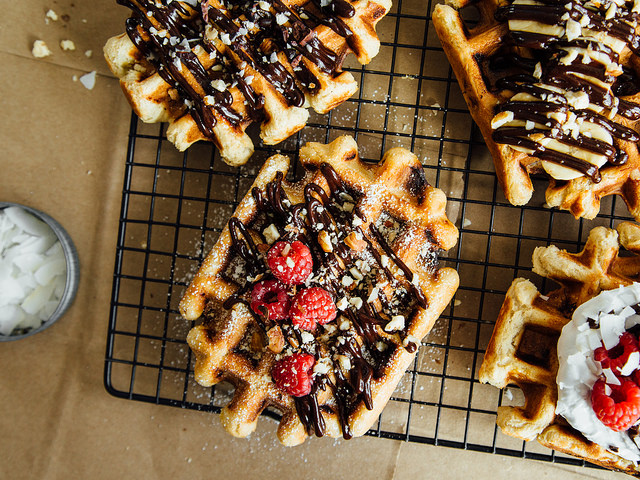
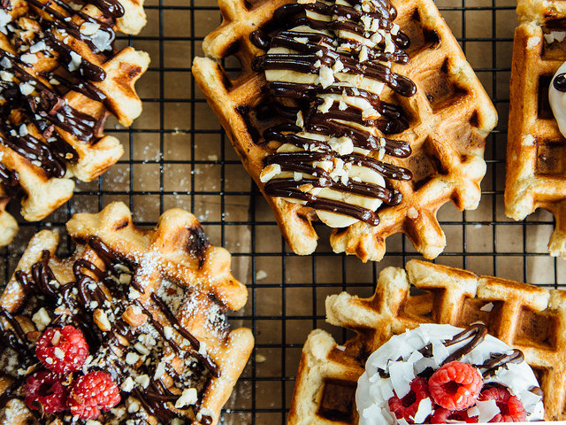
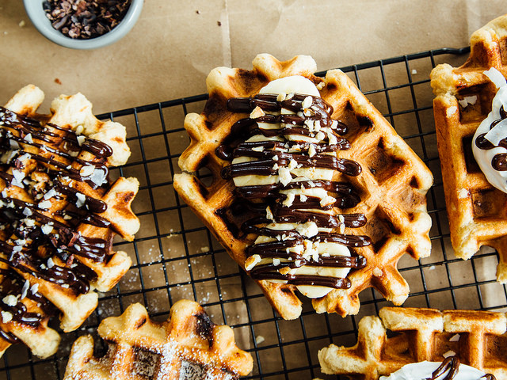

Waffles, Two Ways: Pearl Sugar Pretzel Waffles
+ Traditional Liege Waffles


Waffles are the only food that matter. My love for waffles is rivaled only by Leslie Knope and The Humphreys of Gossip Girl. If I wasn't such a terrible writer, I would write a poem/song/Whitney Housten-style ballad about them. So, the next best thing I can do is pass on this awesome waffle recipe by one my food blog favourites, Oh Lady Cakes, and hope that this good deed will translate into a blessing in the form of the Belgian waffle iron I've been eyeing for the past 3 years. Enjoy!
Ingredients
- 1/4 teaspoons (7g) active dry yeast
- 1/4 cup (50g) warm water, between 105-108˚F
- 2 cups (280g) white whole wheat flour
- 1/2 teaspoon (2g) fine sea salt
- 1/4 cup (52g) cane sugar
- 1/4 cup (45g) refined coconut oil, melted
- 1/2 cup (110g) unsweetened almondmilk, room temperature)
- 2 (88g) flax eggs
- 1 teaspoon (4g) pure vanilla extract
- 1/2 cup pearl sugar
You'll Also Need
- Powdered sugar
- Coconut whipped cream
- Hazelnut hot fudge sauce (variation #2 using Frangelico)
- Flaked coconut
- Crushed hazelnuts
- Cacao nibs
- Banana slices
- Frozen raspberries
Directions
- In a small bowl, stir together the water and yeast; sprinkle with a small pinch of sugar and set aside for 10-15 minutes, until foamy. In a large mixing bowl, whisk together the flour, salt, and sugar.
- When the yeast has proofed, create a well in the center of the dry ingredients and add the yeast mixture, oil, almondmilk, flax eggs, and vanilla extract. Stir, using a sturdy spatula, just until combined then fold in the pearl sugar
- Cover the bowl with plastic wrap and refrigerate overnight, or for at least 8 hours (no more than 24). An hour before you plan on making the waffles, remove the bowl from the fridge and let the dough sit at room temperature - uncovered - for one hour.
- For pearl sugar pretzel waffles: Once the dough has sat at room temperature for an hour, prepare a baking soda bath by bringing 6 cups of water to a boil, in a medium-sized pot.
- While you're waiting for the water to boil, line a baking sheet with parchment paper (and set aside), section the dough into 4 or 5 even pieces (I like to use a stainless steel scoop), and preheat your waffle maker.
- Once the water is boiling, add 1/4 cup of baking soda and use a large slotted spoon to dip the dough - one piece at a time - into the water bath; submerge for 15-20 seconds then shake to remove excess water.
- Once dipped, transfer back to the baking sheet. Spray the preheated waffle maker with oil (you'll likely have to do it between each waffle) and cook waffles according to the manufacturer's instructions.
- To keep waffles warm, place them on a baking sheet in a 200˚F oven. When you're ready to serve, top with all your favorite things (a handful of mine are listed above) (and make for next-level waffles). My favorite combination is sliced bananas, hot fudge sauce, and crushed hazelnuts. Easy caramel sauce would be good on top, too.
For traditional Liege waffles: Once the dough has sat at room temperature for an hour, preheat your waffle maker. Once preheated, spray with oil and add 1/2-3/4 cup of dough to the maker and cook according to the manufacturer’s instructions.
Yield: 4-5 waffles
Nutrition Per Serving
| Serving Size | Calories | Sugar | Fat | Saturated Fat | Carbohydrates | Fibre | Protein |
|---|---|---|---|---|---|---|---|
| 1 serving | 637 | 17g | 35g | 9g | 64g | 25g | 21g |